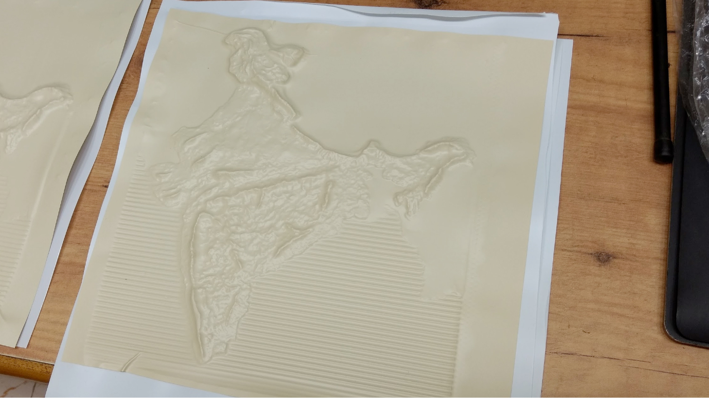

Tactile Information Design
Internship at Xaviers' Resource Centre for the Visually Challenged, Mumbai
This was a month-long summer internship at XRCVC, and my brief was to set up their new thermoforming machine, source material for use, and provide an instruction set for the staff to contunue to use the machine for prototyping.
A thermoforming machine uses heat and vaccum to replicte the form of a hard mould, onto a sheet of plastic. This plastic sheet with tactile information is used by people with vision impairment to access imagery that is otherwise inaccessible in print format.
Here are some explorations to understand the medium and material.
test mould for mountains
thermoformed mountain range
model created for 3D printing
line thicknesses, twists, explorations
twists in mould
thermoformed results
In order to test this process, I had to create some moulds. The kind of heat-resistant material I needed for 3D printing wasn't immediately available then, so I started the process with manually created moulds.
I used Open Topography data to create 3D models of the terrain at micro level - few square kilometres, as well as regions the size of cities. Larger the area to be represented, the flatter the area looks. The features don't stand out as much as one might have imagined. I worked around this with some creative exaggerations for the sake of clarity.
Range of tactile graphics
Topography data model of Mumbai
Topography model of a small section of the Himalayas
The base mould to represent the topgraphical map of India, created with epoxy and a bit of patient modelling.
details for hilly areas
proportionately exaggerated heights and features
complete geographical region of India
The base mould went into the thermoforming machine for copies
Best results were formed on APH's thermoforming sheets. We also found a local source of plastic sheets that works nearly as well, but created lots of creases that compromise graphic quality.
This was my first exposure to tactile graphics, and I learnt several interesting things about this medium. 1, that a lot of visual design principles do not translate well to a tactile medium, but 2, information design for easy cognitive consumption is still effectively the same approach and 3, tactile graphics are slow, difficult to label, difficult to understand, and quite limiting.
I wanted to continue exploring how these tangible graphics can be augmented with audio labels and other interactions. Which directly led to my work in Project II, and became the groundwork for Tactopus, focusing on ed-tech products that are inclusive and accessible to people with disabilities.